IXD 103
Work posted on my Tumblr page from IXD 103 and lecture notes
This repository is created for the purpose of organising my lecture notes and tumblr posts for IXD 103, so that it is easy to find sections in my work and the research I used to support my work.
Week 01- tutorial notes
- Managing oneself- Peter F Ducker
- Personal Brand 30%
- Portfolio website 30%
- Research, discovery and supporting website 40%
- Monogram
- Wordmark
- Visual Mark
- Brand guidelines
- Portfolio website
- fivesimplesteps.com
Instgram Research
On Monday we were introduced to IXD103 we were told what this semester would consist of, and what to expect from our modules. I decided to do some research into monograms due to it being covered next Monday, I found this page on Instagram and really liked the work, I chose several pieces that stood out to me, which I will discuss below.

This is the first piece that really stood out to me, mainly because the letter A is in it and I will need inspiration related to my own name to give me some ideas, however it was very hard to miss due to the bold lines and flow of the monogram, making an incomplete triangle.

I really liked this piece, again because A is featured, but also how the thickness of the lines aren’t the same in both ‘A’s making the incomplete ‘A’ seem like it is actually behind the first one. I think the simplicity gives it an elegant clean finish.
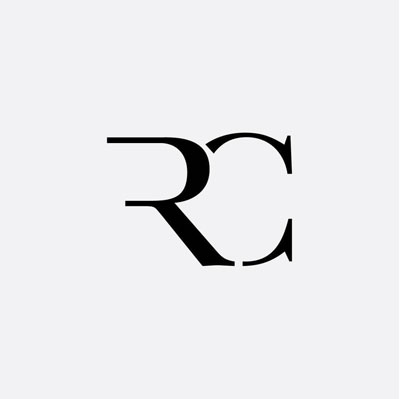This monogram stood out to me a lot, as neither letters are finished, yet it is instantly recognisable what they are, I really like how the font chose allows the ‘C’ to easily flow into the ‘R’ and how they give a very professional finish.

This Monogram stood out due to the minimalistic approach taken to create it, the thick stroke lines ensure that it is clear what the letters are as well
Further Research
Adham Dannaway
When researching Interaction designers to look at I came across Adham Dannaway, I decided to look further into his website and discuss why I liked it so much. When I first clicked on to his website was a really eye-catching home page.
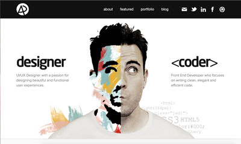The home page is really interactive, it allows you to see two sides of Adham, literally! When you direct your mouse to the left, it expands the ‘designer’ part of Adham, and when you direct the mouse to the left side it expands the ‘coder’ side of him, he explains that he is a UI/UX designer passionate with ‘beautiful and functional user experiences’ and well as being a front end developer ‘who focuses on writing clean, elegant and efficient code. I really like this interactive home page, and it really stood out to me out of all the artists. The social media links are located in the top right hand corner, which is unusual for websites as they are typically in the footer, however it is more beneficial here as they tend to be overlooked at the bottom, here they catch user’s attention which means we are more likely to click and visit his external links.
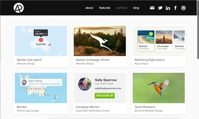The ‘portfolio’ section is laid out simplistically, with small boxes for different portfolio projects, with a main image from each project, each box has a title and a subtitle, it is professional and minimalistic with a clean finish.
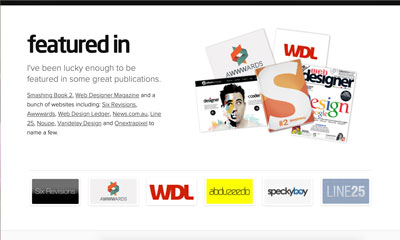In the ‘featured’ section this clean minimal approach is consistent, even if the content isn’t, creating a nice flow throughout the website, but ensuring that the layout is appropriate for the content.

The ‘about me’ section is similar to the ‘featured in’ section however it is appropriate for the content.

The ‘Blog’ section differs from the others with more content in the page, it generally consisted of a title, image and description, it was more content heavy, however it was appropriate for the purpose.
I really liked the layout, and clean minimalist approach of Adham’s website, there was a really nice flow and consistency from the differing pages, allowing it to be professional, yet showing his creative side through imagery and his different approaches
Jeffery Zeldman
I decided to choose Jeffery Zeldman as my second Interaction Designer, as his website is SO different to Adham’s.

His home page is vibrant and colourful, with block colours and a letter-like introduction from Jeffery himself. He is known for talent in the industry, as he explains himself being the smartest and most talented designers, coders and strategists he knows. His page is more content heavy as you scroll down.

This is at the end of the page after a section for his books and publications, allowing you to access a lot without even leaving the homepage, Jeffery uses very bold colours instead of going for minimal white backgrounds.

His page on ‘work’ is a lot more simple with a cleaner layout, yet still quite text heavy with detailed descriptions.
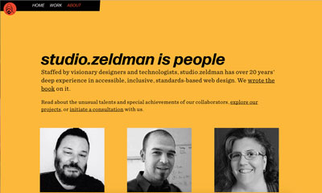The about page uses vibrant colours, consistent with the home page and has multiple black/white images of the team, it is a lot less content heavy.
In my own opinion I don’t actually like the bold colours, as they feel very harsh to the eye, and can be distracting from the content. However the approach is different to other artists I have been looking at.
Mike Kus
For my third interaction designer I decided to look at Mike Kus, I really liked his website because of how it was laid out, and how the there was more imagery then text on the home page.

It is really illustrative and a different approach to standard websites. The different image blocks change when the mouse is hovering over the image, and shows text as to what is within the link.

I think the fact the image changes to something different makes it really interesting and the change is still consistent with the theme of the image.
Once clicked into, a screen slides from the right hand side, with content. The content is laid out cleanly and is very minimal, without too much going on. There are no distractions for the user, meaning they can concentrate on the content.
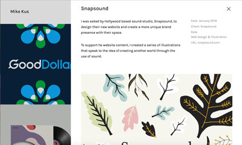

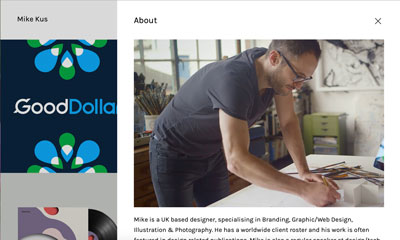
The ‘About’ page has a slightly different layout to the others with a large image at the top and no title, or sub headings. There is a consistency throughout the pages, however, this stands out as the content within is different to his projects.
I really like the clean illustrative approach that Mike takes, and how there is a nice flow throughout the different projects and tabs. The placement of his name and links are at the top of the screen in a header. The content is laid out professionally and creatively. I really like how interactive the website is with the changing imagery.
!--------WEEK TWO------!Week 02- tutorial notes
- Creating Monograms
- City of Melbourne bechance
- Does it work really small
- Patterns from the monograms.-visual assets
- Background to the website?
- Portfolio site incorporates brand.
- Documentation- business cards
- Brand is used continuously through assets
- Stadion slaski
- On bags/badges
- Formula one logo
- Itv new and old
- Kano
- Colour Theory
- Monochromatic
- Triad
- Complimentary
- Hex codes
- Cultural conotations
- Colours in culture-mean different things, western/eastern
- Finalise monogram
- choose 3/4-digitise
- moo cards
- Week 4- good time to reflect
- This week=wordmarks
- This afternoon- Mono update-firm but fair
- This week= looking at alot of type
- city of melbourne-mono goes with word mark
- different positioning
- Different mediums eg business cards
- Word Marks
- Lettering+Kerntypes
- Logotype-book
- Typography is centre peice
- associate different words with typefaces - vice versa
- Fashion Industry-brilliant for wordmarks
- This week=about type
- Word Mark and Monogram-should work together
- Choose appropriate type for my personality
- Some adjectives to describe me -*BRAINSTORM*
- Few typefaces to suit that adjective
- All typefaces look the same eg Google/air bnb- losing their character
- Type changes character
- Make list of type and go through and evaluate suitability
- Script/Calligraphy eg coca-cola/disney/sharpie
- Typographic eg Facebook/Braun/Netflix/Fed Ex/Amazon/Barneys new york/Pencil
- Could Possibly animate
- Lots of variation of positioning
- Yorrick Harrison-like the type
- custom type- Disney/ford/Ray Ban- signatures
- A Twist- one noticable considered differents-glasses logo/showtime/muscular dystrophy
- Kerning LetterForms
- font family- different fonts for different purposes
- Typekit practice
- monogram digitisation
- Wordmark research
- Wordmark sketches
- Word mark refinements-sketch/illustrator
Monogram Mood Board

I really like this letter, it is not a monogram, however it concentrates on form rather than the letter itself, yet I can still recognise that it is an ‘F’.
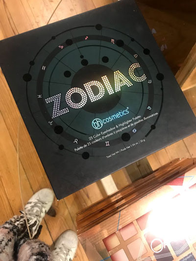I really like how this is using dots to create the letters, and how it adds texture to the word.
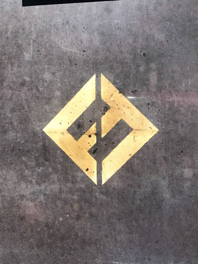I found this in HMV it is a foo fighter album cover, I really like how it looks like an abstract shape rather than to ‘F’s rotated differently.
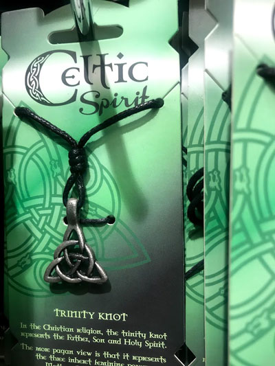I personally really love Celtic designs and the patterns and I would love to incorporate and experiment with it within the letters or use it as a form.

I like this pattern affect that creates movement within the lines from the overlapping, I’d really like to see if I could recreate this some with within my own monograms.
Further Monogram research-Pinterest
I decided to look at Pinterest artists for inspiration on Monograms, I created this mood board as a digital form of brainstorming things I liked and what I could use or incorporate in my experimenting. Below I will discuss some of my favourites.

I really like this piece as the flat clean lines of the ‘S’ and ‘T’ combined to create a broken up form, it is simple yet effective.

I’ve chose this because I like how it gives the impression of a 3D ‘C’ even though it is just a build of lines.

I like the clean straight lines and how it is easily recognisable as an ‘E’ but looks nothing like the letter, it is more based on form than actual lettering.
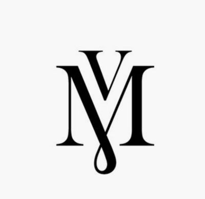I think the placement caught my eye, and how the artist chose to use size to create a simple Monogram that is professional and minimal. I also like the curved loop at the bottom of the ‘M’ it adds feminine touch to the Monogram.

I chose this Monogram as I think the broken lines are effective, as our eyes our trained to fill in the gaps, I also think how the ‘C’ is incorporated into the ‘A’ to finish the line is effective and different.

I really liked this design, because the ‘K’ and ‘A’ create a shape or small pattern and don’t look like standard lettering.

I’ve chosen this design because of how the designer subtly incorporates the ‘B’ into the D.
I would like to use and incorporate some of the ideas from these designs, and create an original and creative monogram that represents my own initials.
Physical Mood Board

I decided to create a mood board based of fonts that I like, forms that I like and a colour scheme I might use for my monograms, I found it quite hard to find different fonts that I really liked, part of the reason for colour and form being incorporated.
Monograms, Monograms and more Monograms...
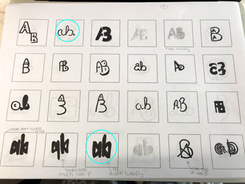I decided to create a wide rand of monograms to help try get the best possible monogram for my initials. the first circled monogram in the top row, I particularly like it because of its simplicity and how clean it is, the monogram in the bottom row I really like because of how diverse it is compared to other monograms you see these days.

There are several monograms that I like on this page the first one I like because it is really simple but eye-catching, another way to approach lettering instead of just standard letter, more like forms. The second monogram in the top row I think is quite quirky, as it uses the @ symbol and creates a ‘b’, something different to usual monograms, I also think its a funny take due to the fact that I’m doing interaction design. Lastly, I like the abstract monogram that concentrates the essence of the letter, but not using actual letters at all.

On my third page of monograms I chose the first one, as I think it is a creative way to represent A and B, the b is represent using two dots, however I need feedback as to whether it works of is too complex. I like the second highlighted monogram because of it being to clean and unfinished, however I do feel it might be too similar to existing work out there.

The first highlighted monogram on the top row is quite feminine, I like the curved loop and the unfinished B. I like the second ‘A’’B’ monogram due to its simple unfinished look, however I don’t think it works for the ‘B’. The first monogram in the second row, allowed me to be more abstract however creating a different style A instead of a triangle, although it might not be clear what the letters are. The second highlighted monogram in the second row is a different take on the previous monogram with a different B instead of two circles. The last highlight monogram I think is different due to its placement and how it looks stretched, I don’t think I would use it as my monogram but I did like it.
!--------WEEK THREE------!Week 03- tutorial notes
Tumblr posts
Digital Moodboard

Even though I discussed these pieces, and had a link to my Pinterest board, I thought that I would make a digital moodpboard of my favour pieces.
The type of artist I want to be

So I never got round to uploading what we did on the first day back of week 01, I know its a bit late, but better late than never I suppose! So we discussed about what type of artist WE all wanted to be and how we wanted to project ourselves to the public, Kyle suggested a ‘lift pitch’ so we had to imagine we only had 10 seconds to tell a complete stranger who we are/want to be, and that we should use this approach to our twitter bios/ Tumblr bios and instagram bios. To be honest I’m not sure where I am with that, but I do know that I like designing User interfaces, as I think it would be an enjoyable career, but, I do know that out of everything I just want to be the best that I can whether that be in my craft of in my career, I want to be able to compare myself to someone I was 5 years ago and I want to know that I have improved somehow. I also wanted to bring my own personality across in bio so people don’t think I’m forever glued to a screen. the above picture is what is wrote in my bio, and what describe me the best at this moment in time.
Logo by Michael Evamy
I never got the chance before to upload some of my inspiration for the different fonts for my monograms, I borrowed the book Logo by Michael Evamy, it was really good to see some of the different forms and fonts.
I highlighted these three as I really like the fonts used, and the style of smooth clean lines that flow really well together.
I chose this font to look at because I like the curved affects at the tips of the ‘J’, ‘R’ and ‘a’ as well as the way the letters flow into one another.
I really like the very straight, clean and modular sort of essence from this typeface.
I used this as direct inspiration for my own monogram how to use just black shapes to create a monogram, however these look more like a typeface than what my own looks like.
I really like the ‘B’ in this typeface, however I didn’t like how they didnt carry that out throughout the whole typeface.
I really like the curved lettering in this typeface. however I don’t personally like the ‘m’.
Name Research

I decided I would look into the meaning of my Name, Ailsise Burns, I found that Ailsise(Alisha/Alicia) has German/indian and French ties and means noble/kind as well as protected by God, due to its ties to Elijah the bible. My name is spelt in old Irish. Burns, However is an old Scottish clan name, which was used to describe someone who lived near a burn/stream. I think it is quite fitting, as my favourite colour is Blue, a colour I would have liked to incorporate into my Monogram somehow, now I can do so with a meaning behind it.
Jessica Hische and Daily Drop Cap
So I decided to take the approach of looking at Jessica Hische’s Daily Drop Cap challenge
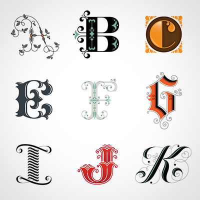I decided to focus on the A and B, to see if there was any inspiration due to the fact they’re the letters im focusing on.
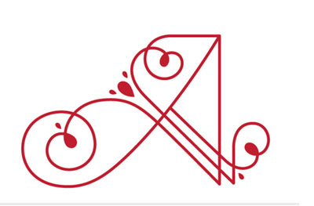I really like this ‘A’ due to the curvature and the how it almost looks like a musical note, or something ornamental.
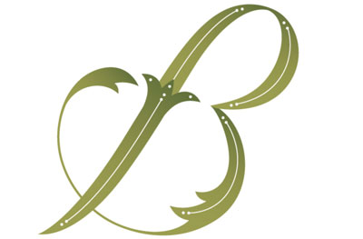I chose this ‘B’ because, again, the curvature but also because of the ‘leafy’ appearance, which suits the colour.

I like this ‘B’ because of the vertical line looks slightly like a podium, making the ‘B’ look like a structure not a letter.

I really like this ‘B’ mainly for the fact that its simple and effective.
Feedback
So I received some feedback from Kyle and a few classmates in a group critique, I found it really constructive, as I got some feedback saying some of the ideas that I personally liked but didn’t think worked, actually do work! Obviously after some refinement though.
 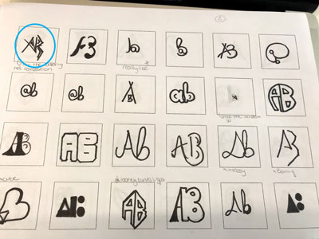
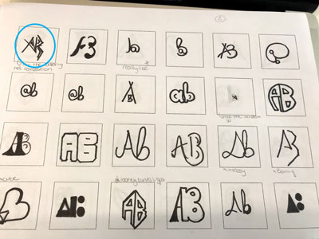
 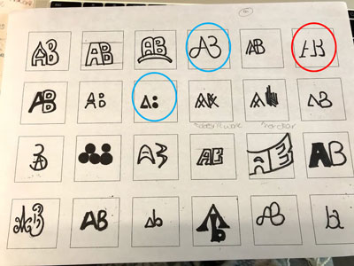
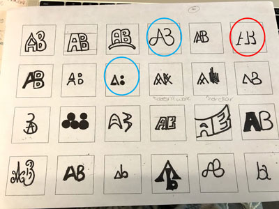
So I highlighted the pieces in red from the pieces that stood out to Kyle and others, and they will be the ones I will focus on, however the pieces highlighted in blue are some of my personal favourites, that I might try to work with and see if they can be improved to the other monograms standard.I really like my pieces however, I feel I haven’t got all of the monograms out of my system just yet, some this week I will continue to try some more ideas until I can’t do any more! They will probably get a little bit more abstract but please don’t judge, just experimenting!
V and A Mueseum Monogram
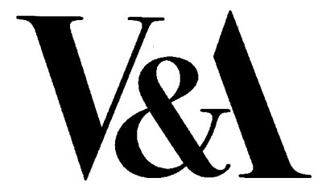So this Monogram was created for the V&A museum in 1989 by Alan Fletcher. It is simple and elegant and incorporates the ampersand to fill in the missing crossbar on the A is smart and innovative. I really like the piece, and I incorporated it slightly to some of my own pieces due to it being such an influential piece.
Monograms...AGAIN!

So it turned out that I had a few more monograms left in me, definitely think id struggle to create anymore though! None of these really stood out to me compared to my previous monograms, this was more to do with pushing my limits to see what else I could create? I probably won’t be uploading any new monograms but I will be refining some previous designs!
Monogram Development-1
 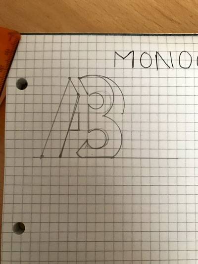
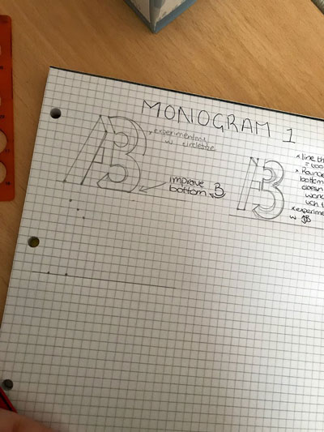
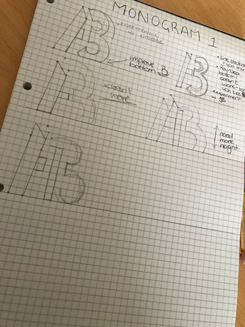
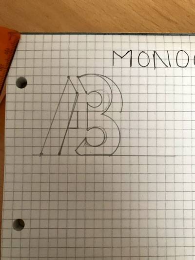
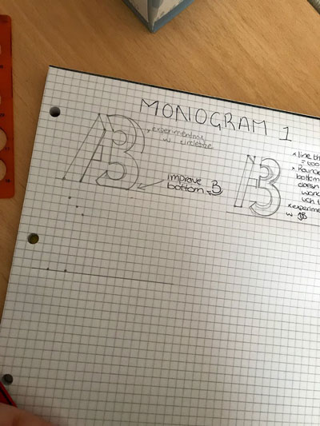
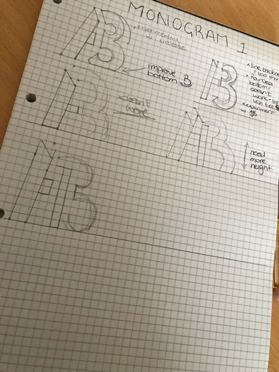

 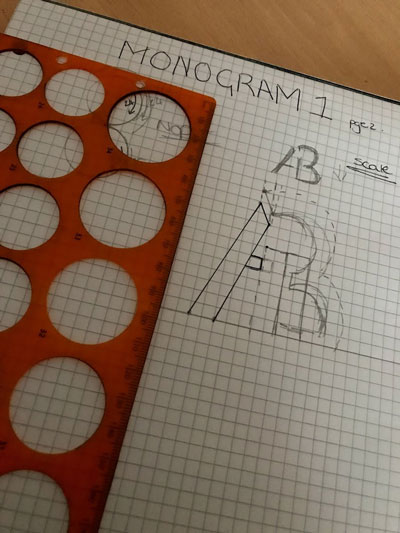
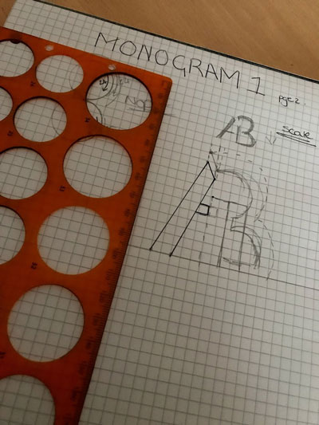


So I decided to develop some of my monograms, using scaling, and appropriate proportions to see if the monogram works, this is the first Monogram I worked on. I did struggle a lot with this one, especially with the B, first I didn’t want it to look like a 3 therefore I included a line to make it recognisable, I then struggled a lot with the sizing and proportions of the curves on the B. I feel that it does work to a point, but I would really like to get some feedback from Kyle and a few of my classmates to see their thoughts and ideas. My sketches are very rough and messy but that’s just so I can get an idea of what works and what doesn’t, a lot of trial and error on my part.
Monogram Development-2

This was the second choice from my feedback session that seemed to be popular, but perhaps more so as a visual mark more so than an actual Monogram, I struggled a lot with this one, as I wanted to emphasis curvature, like cartoon hearts do, however it was difficult to find a balance between curvature and proportions, also it would be awkward as a monogram as it may take up to much room when being placed onto work or in headers, which isn’t practical. Furthermore, It might not be recognisable as a heart without the guidelines of the heart.
Monogram Development-3
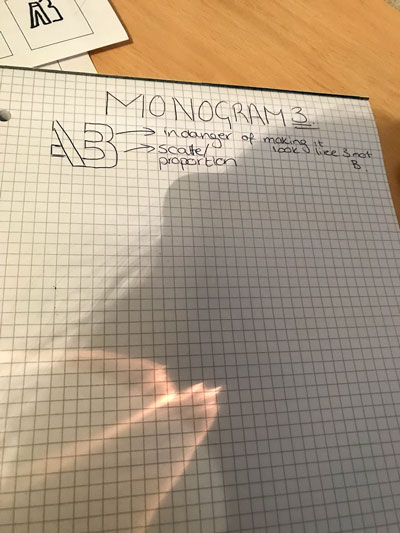 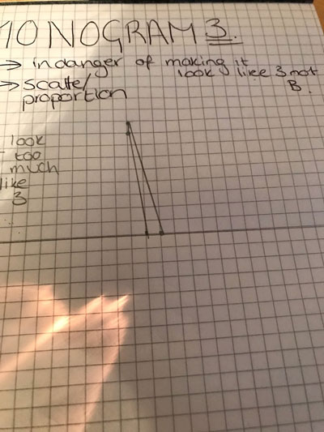
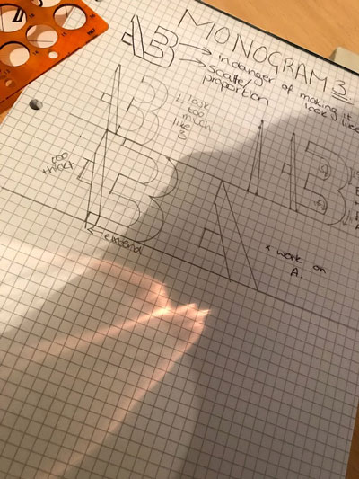
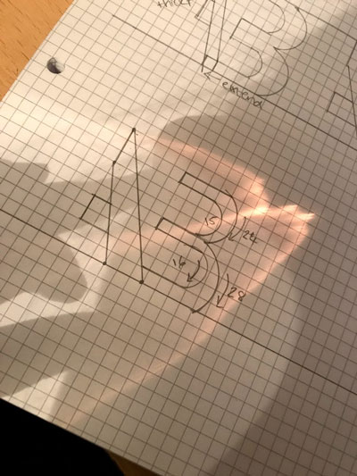
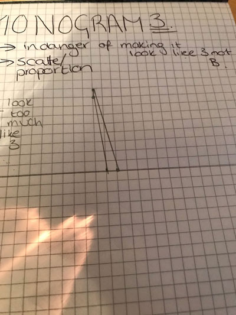
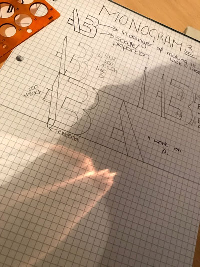
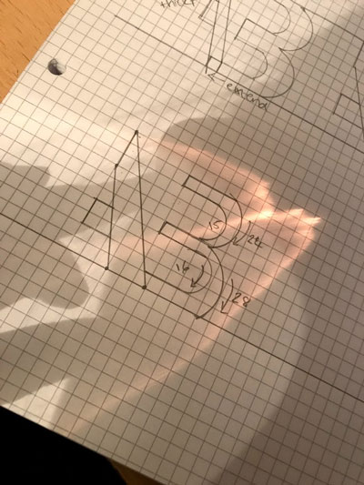

 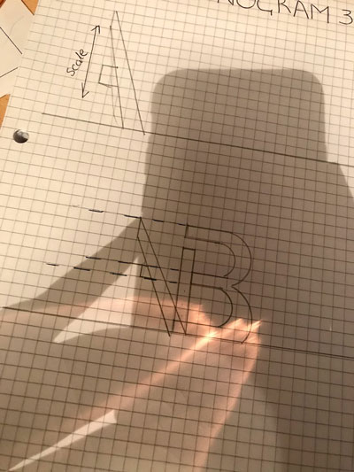
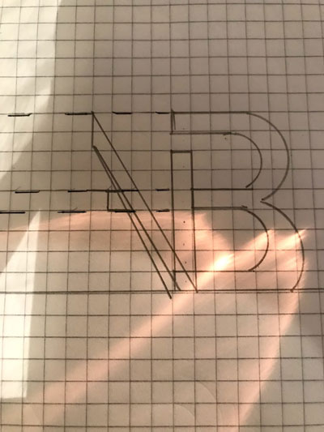
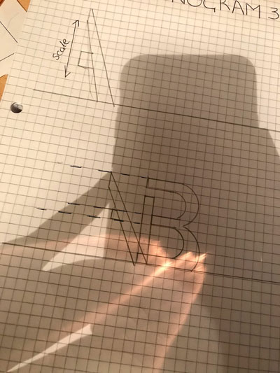
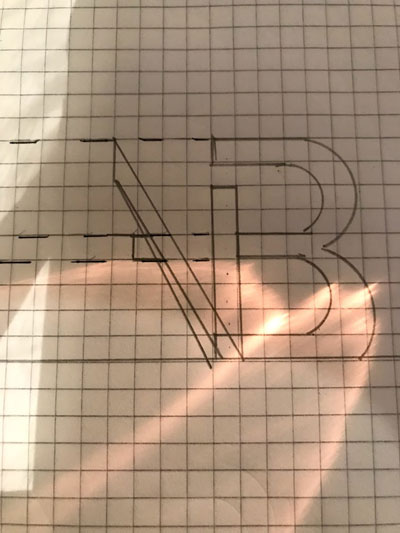

Similarly to the first monogram, I struggled ALOT with this one, but I am SO happy with the outcome. When creating different monograms I didn’t really like this one, and didn’t take much interest in it, the reason for the development was because it was one of the chosen favourites when getting feedback, However, seeing it with proper scaling and proportions I REALLY REALLY like it! It is a really clean sleek design, and quite ‘tom-boyish’ which suits my personality. I struggled a lot with the curves in the B and I feel that may also be a problem when it comes to doing it justice on sketch/illustrator when digitising it. I also included the vertical line in the B however cut it short, as from influences when doing research I really like the gaps in monograms which make them look unfinished, but I think it works well here due to the fact it makes it look very modern with a good flow through it. I also struggling with the scale for the A to make it work with the B, however I feel the finished look works really well!
Monogram Development-4
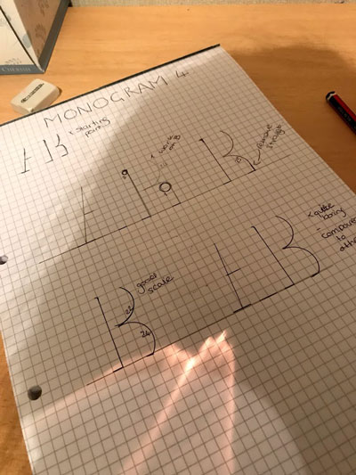I didn’t really take a lot of images when devloping this Monograms, because there isn’t a whole lot to it, I think is is very simple, but may be too similar to existing monograms out their, furthermore, the B could be possibly mistaken for an R, I’m not a huge fan of this monogram compared to others, however I would like to try to get some more feedback on it.
Monogram Development-5
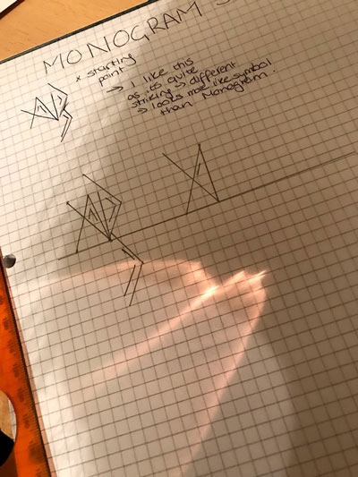 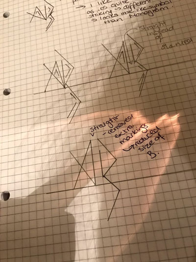The following posts including this one will include my personal choices of favourite Monograms, and developing them to see if they can be improved upon, I wanted to do this, because if after feedback the first four don’t work, I would like to have some other developed monograms for the group to look at.I adjusted this monogram very slightly such as removing the unnecessary lines and making the A more straight and parallel to the B. I do like this monogram, due to the fact it looks more like a form, more so than lettering, however I can see why some people favoured other monograms as this may be too simplistic and may not be practical for the purposes.
Monogram Development-6


I chose to develop this monogram, as it is one of my own personal favourites due to how abstract it is, I know it probably won’t work practically due to the fact some people may not be able to recognise that this is an ‘a’ and the two dots symbolise the B, but I think it is different and unique.
Monogram Development-7
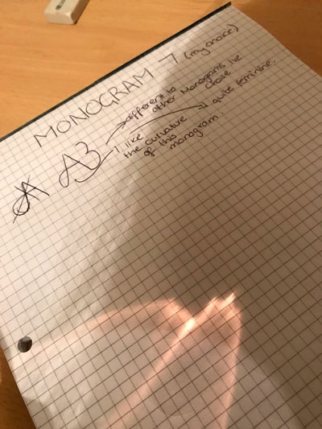

I chose to develop this Monogram, as I really like the curvature and simplicity of it. I enjoyed developing it further, as it just seemed to work well, but it wasn’t one of the monograms that was noticed when the group was choosing, some hopefully after some development the others might like it better, however I will base my actions on the feedback after tomorrows session, as others may think other monograms are stronger.
Monogram Development-8
 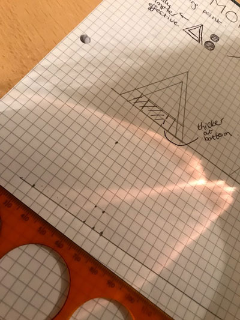
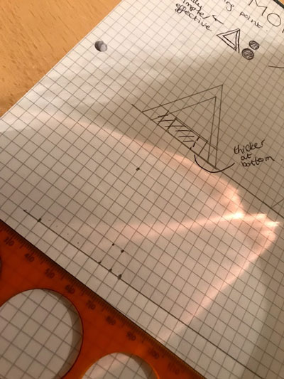


 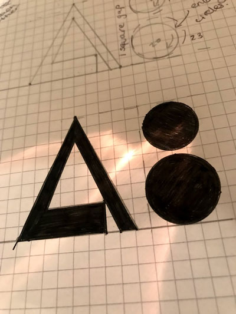
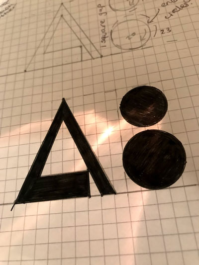
Similar to monogram 6, I like this monogram due to the fact of how abstract it is, it is simple and uses shapes to represent the A and B in my initials, I feel there is a possibility it could work as a visual mark, due to it being quite versatile, but again, it wasn’t one of the stronger Monograms that the group gave feedback on, however it is one of my personal favourites, which is why I wanted to experiment with it.
Monograms go digital
So I found this process extremely frustrating! I enjoy working on sketch, however found it incredibly hard to create a B! I have very little experience on illustrator also, so it was just as frustrating, these are first drafts and will be subject to criticism tomorrow, but PLEASE sympathise for me because I have been nearly pulling my hair out!!
So I chose to keep it sort of simple, with this first monogram to go digital is Monogram 3- one of my favourites, but trying to do it justice was incredibly hard!

So after a long period of time I got this! I feel the curves on the B definitely need improvement, however I want to document the full coverage of my process so here it is!

I then tried to add some colour, after moodboarding some colours(will be uploaded later!) and after some research into the name Burns I chose blue(my favourite colour) I really like this shade as it is really calming and not too harsh on the eye. However I might be the silliest person ever but I did not know how to add a fill colour so it was outline only! But I really like this outline however I would like to experiment with the colours.
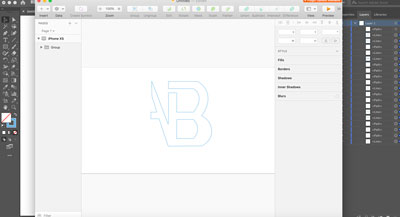I did add this into sketch, to see if I could add a fill, but as you can see it didn’t go well..
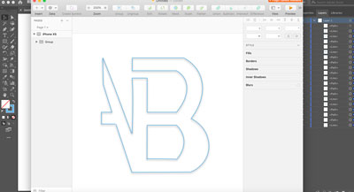However I did find this blue tool, which I feel really lifts the monogram and brings it to another level! It reeky stands out, but again I need some feedback as I could be wrong..
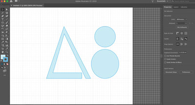 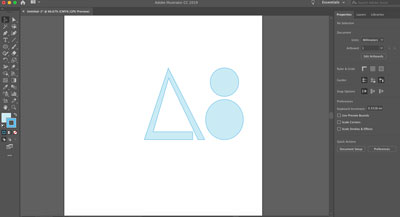
So I decided to create this on illustrator, however I feel like I might have been using the wrong tool to create the A, I just don’t think this does it justice, and it doesn’t seem to work digitally as it did on paper, but then again thats just my opinion!
So I decided to take this digital, as I thought it might work better on screen, but again I really don’t think it did it justice, while creating it I straightened the bottom part of the B more like the version on paper, but it looked to much like a R, then when I made it more round it still didn’t work well.
 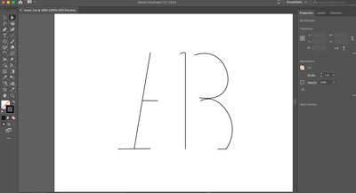
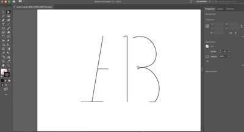
I decided a touch of colour might help, I decided to go with this coral pink colour, I really liked this colour when moodboarding, and think it might work really well with the blue colours I have been introducing in the previous monograms.
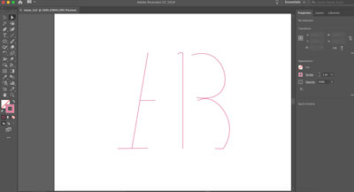Lastly, similar to the above monogram I chose to take this digital to see if it worked well on the screen, I feel the B could definitely be improved, however I feel it was definitely more successful than the one previous, again I used this coral pink colour, to see it would work well, and it gave a very feminine feel to the monogram.
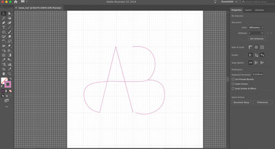 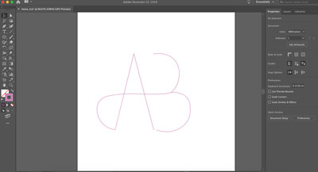Out of the Monograms I chose to digitally create tonight, I feel the first Monogram was definitely the most successful, after some refinement and feedback I feel like it may be my final choice. I felt the third Monogram was definitely the weak link, it just doesn’t seem to work well on paper of on screen at the minute, and might be just to simplistic and is very link current monograms out there.
Mini Moodboards!
So after my first draft, I realised it didn’t really meet the brief! So using some of the cutouts of the previous and including some new ones I created an A5 size moodpboard, with text only, I felt this one worked better and I prefer all the text in this one, it may be small- but as people say- all good things come it small packages!

I didn’t want to waste all of the work I did on the A3 moodboard on colour, and due to me introducing some more colour into my monograms, I chose to use the cut outs from the previous, and cut out the two main sections I would like to use as colour schemes, with the blues/greys/greens and corals/pinks and purples to create another mini moodboard on A5!

Moo Card
Kyle suggested to look at Moo Cards, I thought this was a great idea as it will determine will my monogram work practically, I did a rough version, the details in it are not correct, and I think if I was creating a final version I would look at a white background so the monogram looked cleaner.
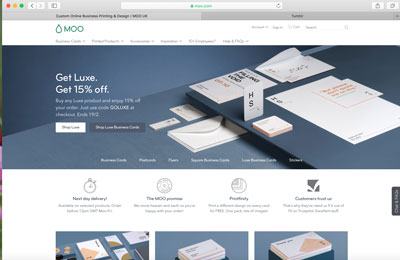 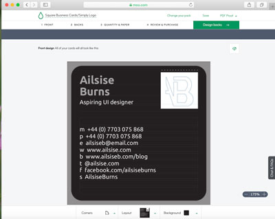
I think the front of the card something more could be improved upon to make it more unique.
City Of Melbourne

I wanted to look at the city of Melbourne logo, as it is a great example as to how to create a versatile design that can fit many different purposes. It has different colours, designs and colours, yet the logo remains consistent throughout.
 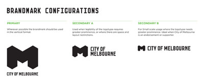
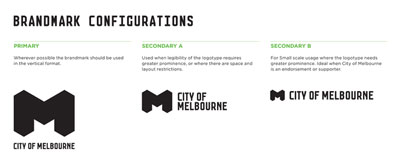
The word mark and logo work together in many different ways, making it really practical and unique. It is easily recognisable, and can be adapted to suit the needs of documentation and different mediums.
Formula 1- New and Old
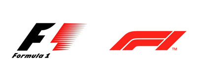I wanted to highlight the Formula 1 logos, I wasn’t aware that they had updated to a newer logo, however I feel the older one is a lot better. It is clear that the previous logo had a lot of consideration and there is a small twist that usually goes unnoticed- between the ‘F’ and the red lines is a one.
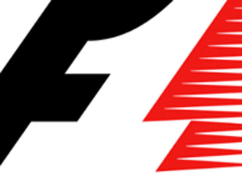A lot of people don’t notice it, as it is an absence of colour and clear lines, but it works so well! I do like the new version due to the f resembling a race track, however, I don’t feel like they should have changed something that worked so well!
ITV Monogram- New and Old
I want to evaluate the Itv monograms-both new and old. I really like this version of it due to the mixing of the original colours create new colours, I thought this was a really smart and considered approach to the monogram.
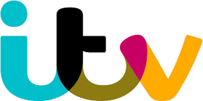This is the newer updated version, I feel it doesn’t have the same considered approach as the previous, however I do like the colour scheme(due to blue being my favourite) but, I don’t think alot of thought went into the updated version.
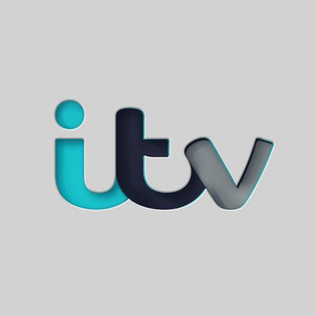 !--------WEEK FOUR------!Week 04- tutorial notes
Tasks: